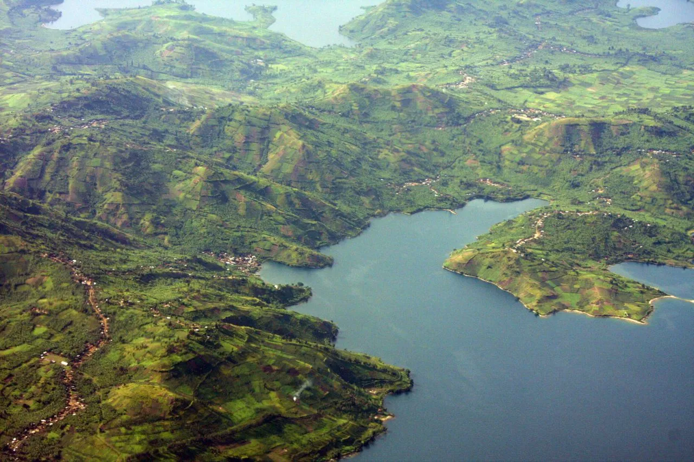
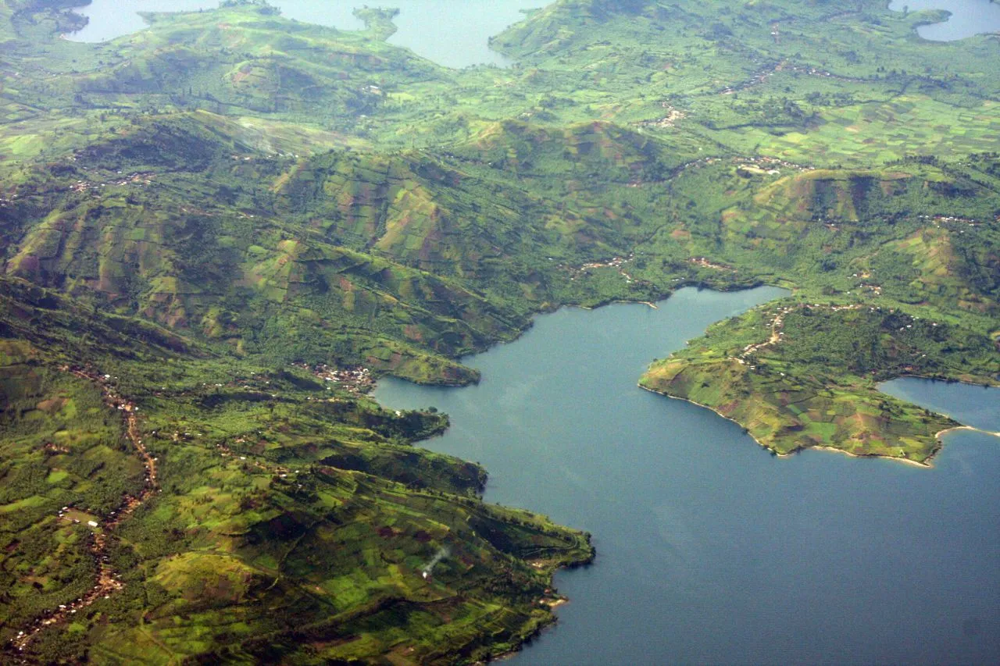
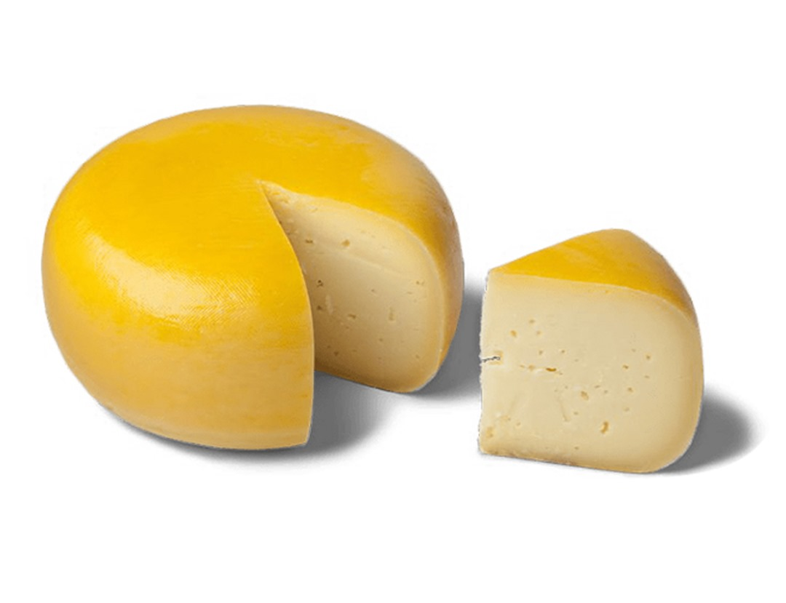
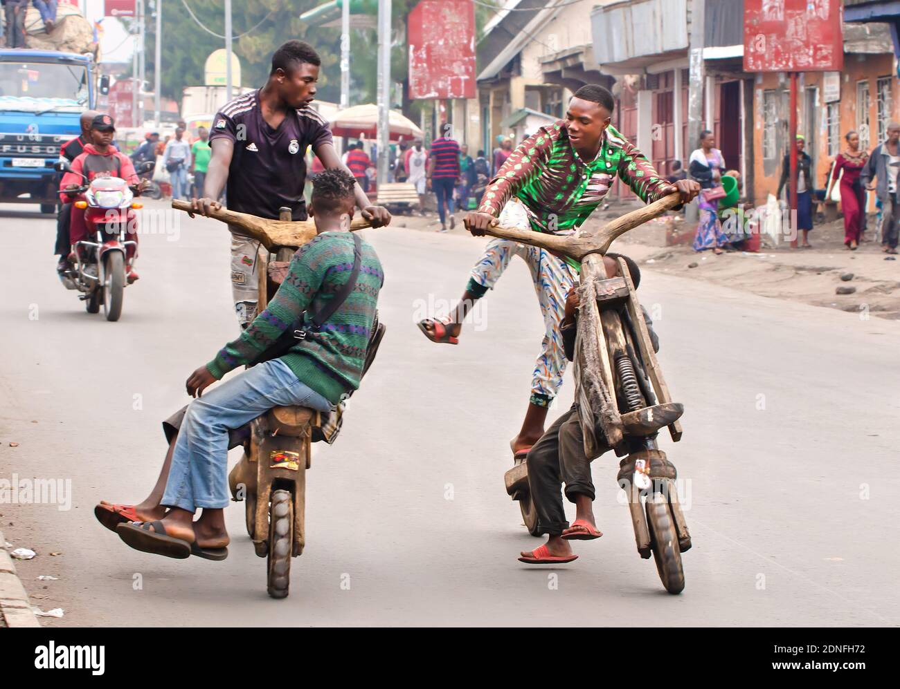
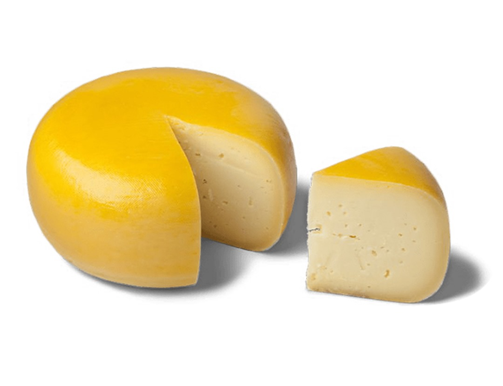
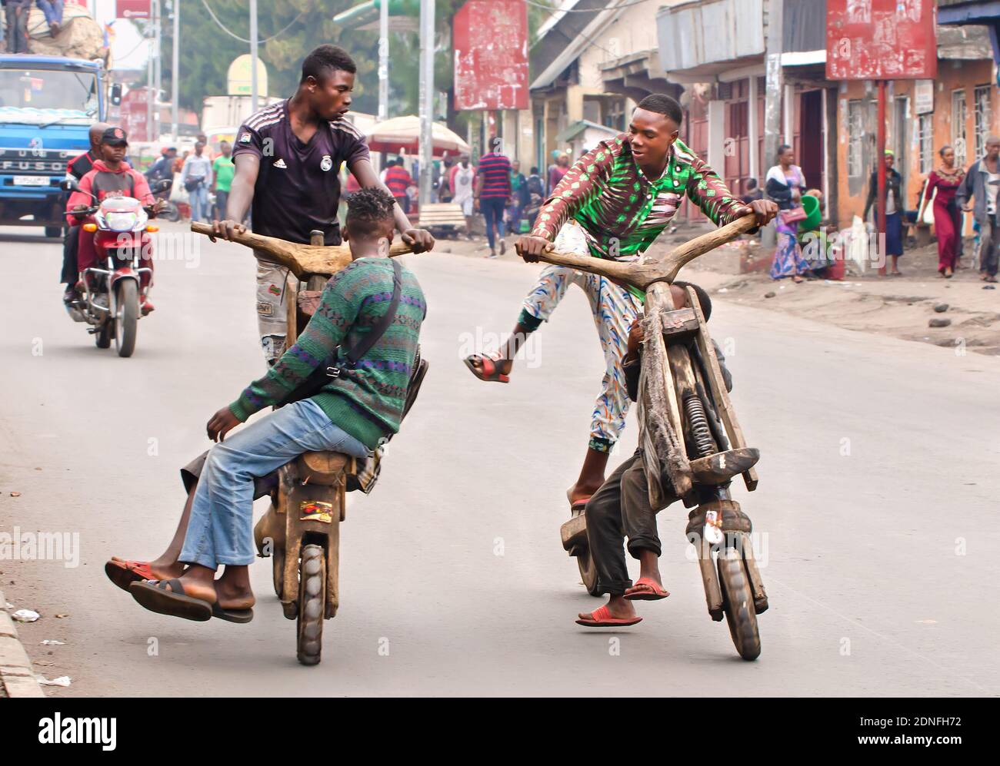
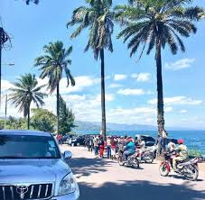
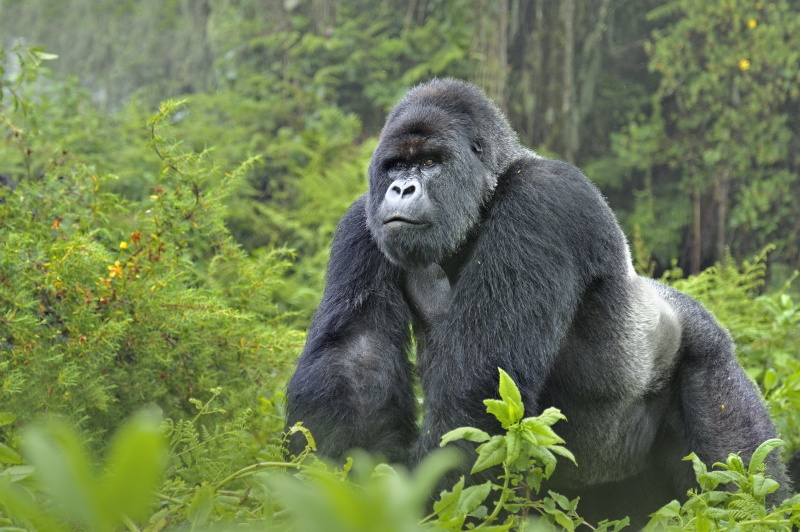
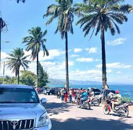
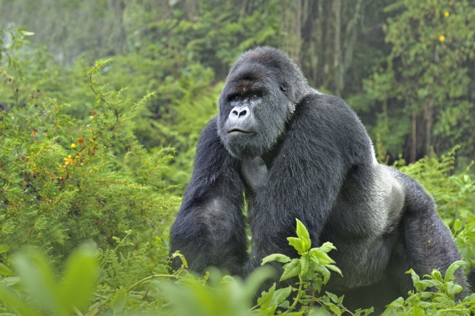

Stunning Landscapes

 

Goma is blessed with breathtaking landscapes. The sparkling waters of Lake Kivu offer serene views and unforgettable sunsets, while the lush green hills provide a perfect backdrop for adventure. The nearby Virunga National Park is home to rare mountain gorillas and diverse wildlife, making it a paradise for nature lovers.
The Joyful Spirit of Goma
What truly sets Goma apart is the happiness and resilience of its people. Despite challenges, the community is always filled with laughter, music, and celebration. Local markets buzz with energy, and the streets are alive with the sounds of Congolese rumba and friendly greetings.
Unique Specialties
 



Goma is famous for its delicious cuisine, especially fresh fish from Lake Kivu and the flavorful “Ugali” served with local vegetables. The city is also known for its vibrant art scene, with talented artists creating beautiful paintings and crafts that reflect the region’s rich heritage.
A Place Like No Other
 



Goma is more than just a city; it’s a feeling of warmth, hope, and endless beauty. Whether you’re exploring its natural wonders, enjoying its culinary delights, or experiencing the joy of its people, Goma will always leave you with unforgettable memories.